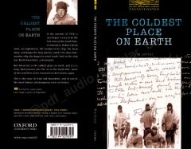

TCJanubiy qutbni zabt etish uchun ikki buyuk tadqiqotchining tarixiy poygasi haqida hikoya.
Ushbu kitob 1910-yilda Janubiy qutbga birinchi bo'lib yetib borish uchun raqobatlashgan ikki buyuk tadqiqotchi — Robert Folkon Skott va Roald Amundsenning tarixiy poygasi haqida hikoya qiladi. Asar ekspeditsiyalarning tayyorgarlik jarayoni, qiyinchiliklari va qutbga yetib borish yo'lidagi dramatik voqealarni yoritib beradi.